Peralatan membuat keramik
Wahyu Gatot Budiyanto, dkk (2008: 2015-215) mengemukakan Alat pembuatan keramik didasarkan pada empat jenis yaitu alat bantu, alat pokok, perlengkapan dan peralatan keselamatan kerja. digunakan dalam membentuk keramik tersebut.Peralatan tersebut digunakan dalam memproses pembentukan keramik dengan berbagai keteknikan.
Alat Bantu
- Butsir kawat (wire modelling tools)
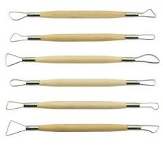
Untuk merapikan, menghaluskan, mengerok, membentuk detail, dan membuat tekstur benda kerja.
- Butsir kayu (wood modelling tools)
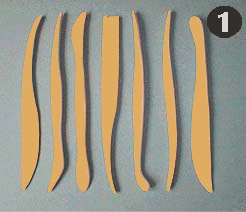
Untuk menghaluskan, membentuk detail, merapikan, membuat dekorasi, merapikan dan menghaluskan benda kerja.
- Ribbon tools

Untuk mengerok, menghaluskan, dan merapikan benda kerja.
- Kawat pemotong (wire cutter)
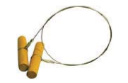
Untuk memotong ujung bibir, dasar benda kerja, dan memotong tanah liat plastis.
- Pisau pemotong (felting knife)
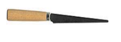
Untuk memotong, mengiris lempengan tanah liat.
- Potter rib/throwing ribs/rubber palletes/steel pallates
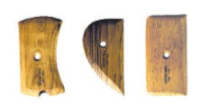
Untuk menghaluskan dan membentuk permukaan luar benda kerja.
- Spon (Sponges)
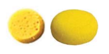
Untuk menyerap kandungan air, menghaluskan benda kerja, dan membersihkan handtool, cetakan gips pada waktu pencucian.
- Sponge stick
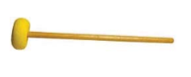
Untuk menghaluskan bagian dalam benda kerja.
- Jarum (needles)
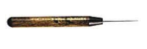
Untuk memotong bibir, menusuk gelembung udara, dan menggores benda kerja.
- Kuas
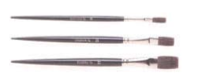
Untuk mengolesi lumpur tanah pada bagian benda yang akan di sambung, mengolesi larutan pemisah pada model dan cetakan gips.
- Scrapper
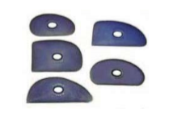
Untuk menghaluskan lempengan tanah liat, meratakan permukaan bidang tanah liat
- Throwing stick
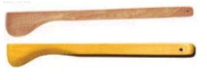
Untuk membentuk, menghaluskan, merapikan bagian dalam benda keramik.
- Penggaris
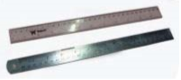
Untuk mengukur pajang, lebar, dan tinggi benda kerja.
- Kaliper (Caliper)
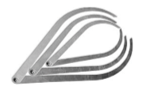
Untuk mengukur diameter benda kerja.
- Penggaris siku.
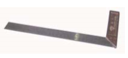
Untuk mengukur panjang dan posisi tegak lurus dari benda atau model.
- Waterpass
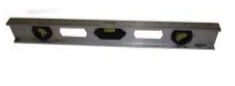
Untuk mengukur kedataran model.
Alat Pokok
- Roll kayu
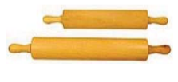
Untuk membuat lempengan tanah.
- Paddle dan anvil
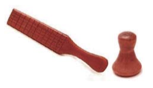
Untuk memadatkan dinding badan benda keramik yang dibentuk dengan teknik putar tatap yang dilakukan dengan cara memukulkan paddle pada dinding luar dan anvil untuk menahannya di bagian dalam benda keramik.
- Bow Harp
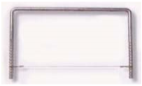
Untuk membuat lempengan tanah liat dengan bantuan kawat yang diikatkan pada besi dengan berbagai ukuran untuk menentukan ketebalan lempengan atanh liat.
- Slab roller
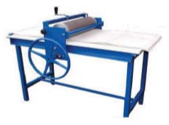
Untuk membuat lempengan tanah liat plastis yang digerakkan dengan sistem mekanik. Alat ini juga dilengkapi dengan ukuran untuk menentukan ketebalan lempengan tanah liat.
- Hand extruder
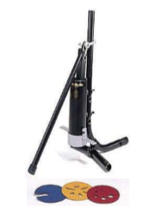
Untuk membuat pilinan tanah liat plastis sesuai dengan asesoris yang digunakan. Alat ini juga dapat untuk membentuk benda keramik dengan teknik extruder dengan berbagai bentuk silider, kotak segi empat, enam, dan sebagainya.
- Alat putar manual tangan (hand wheel)
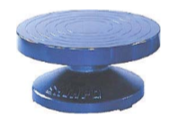
Untuk membentuk terutama benda keramik teknik putar. Alat ini deigerakkan dengan tangan secara manual, kepala putaran dibuat dari besi atau semen.
- Alat putar kaki (kick wheel)
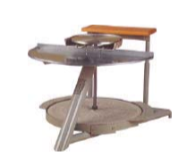
Untuk membentuk terutama benda keramik teknik putar. Alat putar ini merupakan alat yang digerakkan atau diputar dengan kaki. Penggerak alat putar kaki dapat dibedakan menjadi dua yaitu roda pemutar (fly wheel) dan pedal (treadle wheel). Roda pemutar dan kepala putaran yang menggunakan pedal juga berfungsi sebagai beban pemberat sehingga putaran yang dihasilkan menjadi lebih lama.
- Alat putar listrik (electric wheel)
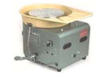
Untuk membentuk terutama benda keramik teknik putar. Alat putar masinal/listrik (electric wheel) merupakan alat putar yang digerakkan motor menggunakan tenaga listrik. Motor berfungsi untuk menggantikan tenaga tangan atau kaki. Alat putar listrik dapat diatur kecepatannya melalui pedal, memiliki kecepatan putar antara 200-300 rpm yang berarti dalam 1 menit dapat berputar sebanyak 200-300 kali. Sistem pengatur kecepatan alat putar listrik dapat berbeda-benda, antara lain:
- Sister pressure control cam
- Sistem roda pemutar (fly wheel)
- Sistem rehostat (variabel resistor)
- Sistem cone
Perlengkapan
- Timbangan
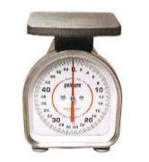
Untuk menimbang bahan tanah liat plastis dan gips yang dibutuhkan. Kapasitas disesuaikan dengan jumlah bahan yang akan diolah.
- Ember
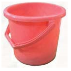
Untuk tempat air pada waktu proses pembentukan benda kerja.
- Baskom
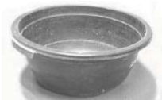
Untuk tempat pembuatan adonan (masa) gips
- Alas pembentukan
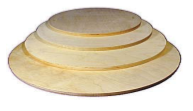
Untuk alas pembentukan benda keramik, benda model, pada waktu proses pembentukan benda.
- Whriler / banding wheel
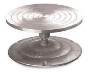
Untuk alas pada waktu proses pembuatan benda keramik dan model.
- Papan cetakan
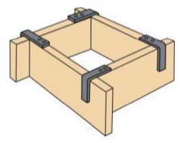
Untuk membuat batas cetakan gips yang berbentuk kotak.
- Linoleum
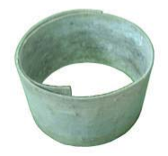
Untuk membuat batas cetakan gips yang berbentuk lingkaran (silindris).
- Sekop
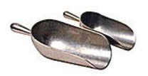
Untuk mengambil material gips. Bahan dari metal atau plastik.
- Gelas ukur
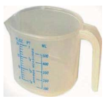
Untuk mengukur banyaknya air yang digunakan dalam proses pembuatan masa gips.
- Kertas ampelas
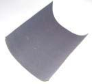
Untuk menghaluskan model gips dan cetakan gips yang telah jadi.
- Kain terpal
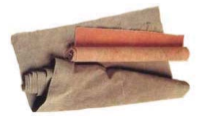
Untuk alas menguli tanah liat plastis di atas meja kayu.
- Meja gips
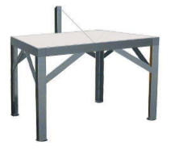
Untuk alas menguli tanah liat plastis sebelum proses pembentukan benda keramik dimulai, juga dilengkapi dengan kawat pemotong.
- Mangkok plastis
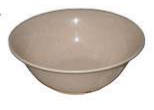
Untuk tempat air atau slip tanah liat.
- Tungku pembakaran
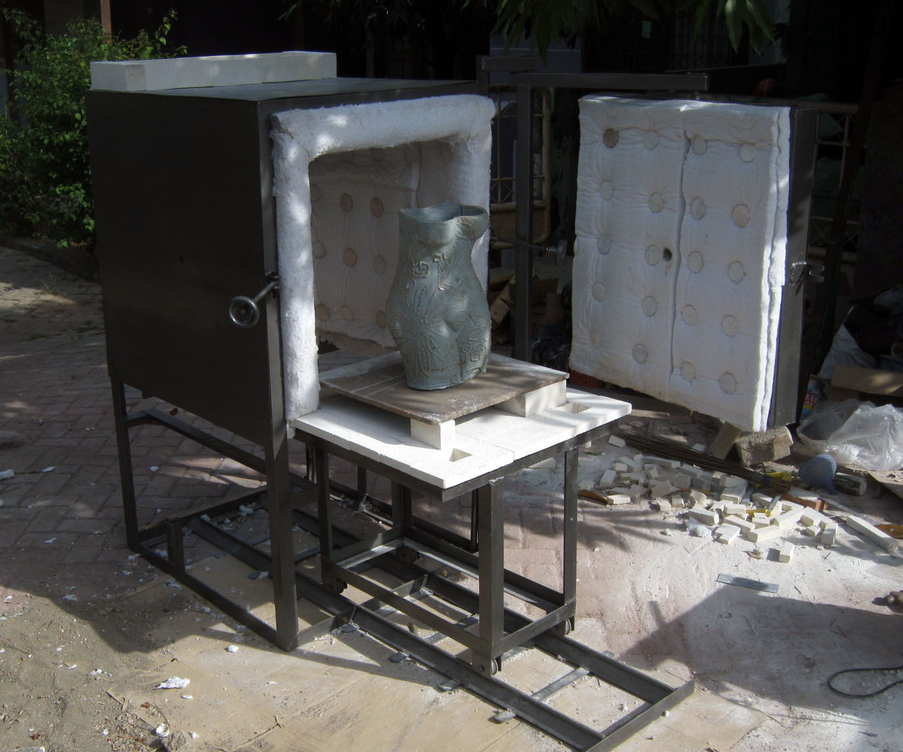
Tungku pembakaran atau kiln adalah suatu tempat/ruangan dari batu bata tahan api yang dapat dipanaskan dengan bahan bakar atau listrik dan dipergunakan untuk membakar benda-benda keramik.
Peralatan Keselamatan Kerja
- Masker
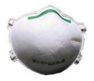
Untuk melindungi hidung dan mulut pada waktu melakukan proses penyiapan masa gips
- Sarung tangan plastik
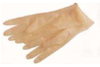
Untuk melindungi tangan pada waktu melakukan proses penyiapan masa gips
- Pakaian kerja
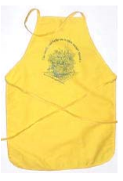
Untuk melindungi badan pada waktu melakukan proses pembentukan benda keramik dan penyiapan masa gips.